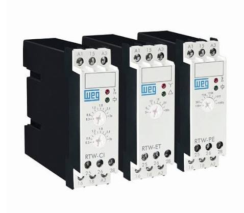
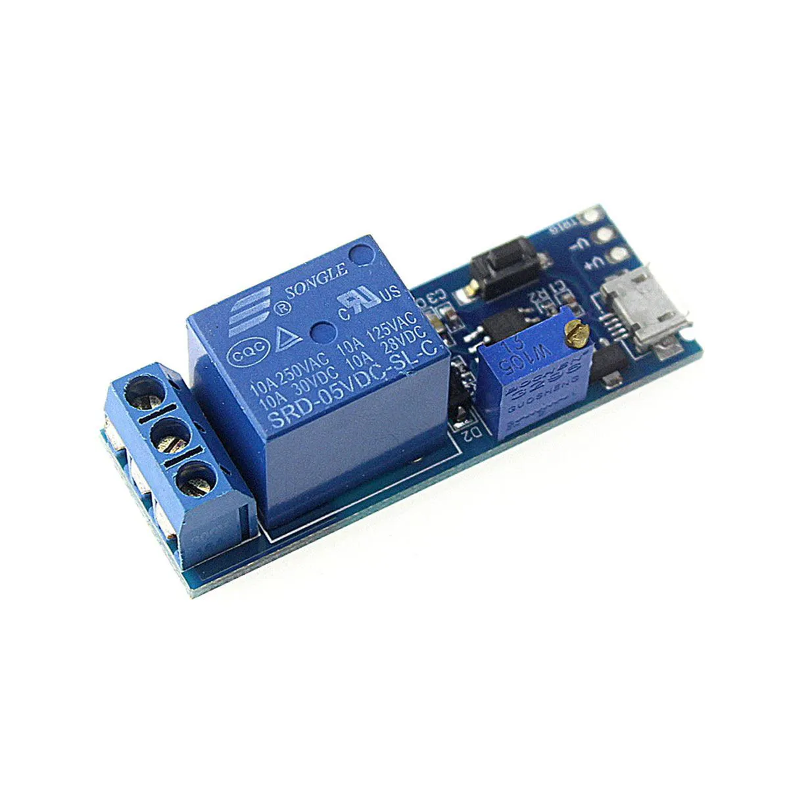
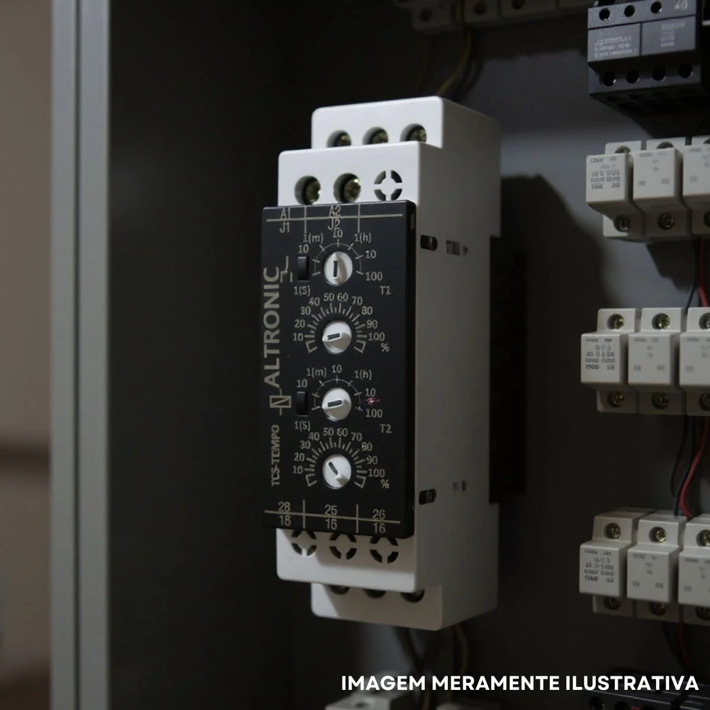

Relé Temporizador
Dispositivo de controle elétrico que abre ou fecha contatos automaticamente após um intervalo de tempo predefinido.
Conceito e Aplicação
O relé temporizador é um dispositivo utilizado para controlar o tempo de acionamento ou desligamento de circuitos elétricos em sistemas de automação industrial. Permite sequenciamento automático de operações com base em intervalos de tempo configuráveis.
- Controle temporal de motores e atuadores;
- Sequenciamento automático de processos industriais;
- Retardo na energização e desenergização de circuitos;
- Utilizado em sistemas de partida estrela-triângulo.
Informações Complementares

Funcionamento
Controla o tempo de acionamento e desligamento de circuitos elétricos por meio de temporizadores eletrônicos ou eletromecânicos.

Aplicações
Aplicado em comandos elétricos e sistemas de automação industrial para sequenciamento de operações.

Vantagens
Proporciona controle automático, maior eficiência nos processos industriais e redução de intervenção humana.
Empresas
A WEG, a Siemens e a Schneider Electric são algumas das principais fabricantes de relés temporizadores utilizados em comandos elétricos e automação industrial.
: Empresa brasileira líder em soluções elétricas, com linha completa de relés temporizadores para automação industrial.
: Multinacional alemã com linha SIRIUS de relés temporizadores de alta precisão para sistemas de automação.
: Líder global em gestão de energia com relés temporizadores digitais e analógicos para diversas aplicações industriais.